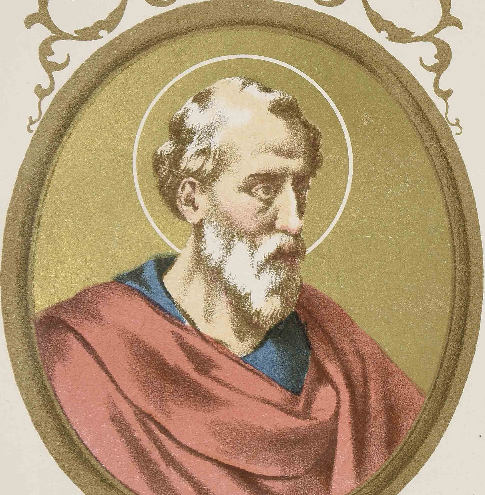

St. Eleutherius
Pope (c. 174-189). The Liber Pontificalis says that he was a native of Nicopolis, Greece. From his contemporary Hegesippus we learn that he was a deacon of the Roman Church under Pope Anicetus (c. 154-164), and evidently remained so under St. Soter, the following pope, whom he succeeded about 174. While the condition of Christians under Marcus Aurelius was distressing in various parts of the empire, the persecution in Rome itself does not seem to have been violent. De Rossi, it is true, dates the martyrdom of St. Cecilia towards the end of this emperor's reign; this date, however, is by no means certain. During the reign of Commodus (180-192) the Christians enjoyed a practically unbroken peace, although the martyrdom of St. Appollonius at Rome took place at the time (180-185). The Montanist movement, that originated in Asia Minor, made its way to Rome and Gaul in the second half of the second century, more particularly about the reign of Eleutherius; its peculiar nature made it difficult to take from the outset a decisive stand against it (see MONTANISTS). During the violent persecution at Lyons, in 177, local confessors wrote from their prison concerning the new movement to the Asiatic and Phrygian brethren, also to Pope Eleutherius. The bearer of their letter to the pope was the presbyter Irenæus, soon afterwards Bishop of Lyons. It appears from statements of Eusebius concerning these letters that the faithful of Lyons, though opposed to the Montanist movement, advocated forbearance and pleaded for the preservation of ecclesiastical unity.
Just when the Roman Church took its definite stand against Montanism is not certainly known. It would seem from Tertullian's account (Against Praxeas 1) that a Roman bishop did at one time address to the Montanists some conciliatory letters, but these letters, says Tertullian, were recalled. He probably refers to Pope Eleutherius, who long hesitated, but, after a conscientious and thorough study of the situation, is supposed to have declared against the Montanists. At Rome heretical Gnostics and Marcionites continued to propagate their false teachings. The "Liber Pontificalis" ascribes to Pope Eleutherius a decree that no kind of food should be despised by Christians (Et hoc iterum firmavit ut nulla esca a Christianis repudiaretur, maxime fidelibus, quod Deus creavit, quæ tamen rationalis et humana est). Possibly he did issue such an edict against the Gnostics and Montanists; it is also possible that on his own responsibility the writer of the "Liber Pontificalis" attributed to this pope a similar decree current about the year 500. The same writer is responsible for a curious and interesting assertion concerning the early missionary activity of the Roman Church; indeed, the "Liber Pontificalis" contains no other statement equally remarkable. Pope Eleutherius, says this writer, received from Lucius, a British king, a letter in which the latter declared that by his behest he wishes to become a Christian (Hic accepit epistula a Lucio Brittanio rege, ut Christianus efficerentur per ejus mandatum). Whence the author of the first part of the "Liber Pontificalis" drew this information, it is now impossible to say. Historically speaking, the fact is quite improbable, and is rejected by all recent critics.
As at the end of the second century the Roman administration was so securely established in Britain, there could no longer have been in the island any real native kings. That some tribal chief, known as king, should have applied to the Roman bishop for instruction in the Christian faith seems improbable enough at that period. The unsupported assertion of the "Liber Pontificalis", a compilation of papal biographies that in its earliest form cannot antedate the first quarter of the sixth century, is not a sufficient basis for the acceptance of this statement. By some it is considered a story intended to demonstrate the Roman origin of the British Church, and consequently the latter's natural subjection to Rome. To make this clearer they locate the origin of the legend in the course of the seventh century, during the dissensions between the primitive British Church and the Anglo-Saxon Church recently established from Rome. But for this hypothesis all proof is lacking. It falls before the simple fact that the first part of the "Liber Pontificalis" was complied long before these dissensions, most probably (Duchesne) by a Roman cleric in the reign of Pope Boniface II (530-532), or (Waitz and Mommsen) early in the seventh century. Moreover, during the entire conflict that centered around the peculiar customs of the Early British Church no reference is ever made to this alleged King Lucius. Saint Bede is the first English writer (673-735) to mention the story repeatedly (Hist. Eccl., I, V; V, 24, De temporum ratione, ad an. 161), and he took it, not from native sources, but from the "Liber Pontificalis". Harnack suggests a more plausible theory (Sitzungsberichte der Berliner Akademie, 1904, I, 906-916). In the document, he holds, from which the compiler of the "Liber Pontificalis" drew his information the name found was not Britanio, but Britio. Now this is the name (Birtha- Britium) of the fortress of Edessa. The king in question is, therefore, Lucius Ælius Septimus Megas Abgar IX, of Edessa, a Christian king, as is well known. The original statement of the "Liber Pontificalis", in this hypothesis, had nothing to do with Britain. The reference was to Abgar IX of Edessa. But the compiler of the "Liber Pontificalis" changed Britio to Brittanio, and in this way made a British king of the Syrian Lucius.
The ninth-century "Historia Brittonum" sees in Lucius a translation of the Celtic name Llever Maur (Great Light), says that the envoys of Lucius were Fagan and Wervan, and tells us that with this king all the other island kings (reguli Britanniæ) were baptized (Hist. Brittonum, xviii). Thirteenth-century chronicles add other details. The "Liber Landavensis", for example (ed. Rees, 26, 65), makes known the names of Elfan and Medwy, the envoys sent by Lucius to the pope, and transfers the king's dominions to Wales. An echo of this legend penetrated even to Switzerland. In a homily preached at Chur and preserved in an eighth- or ninth-century manuscript, St. Timothy is represented as an apostle of Gaul, whence he came to Britain and baptized there a king named Lucius, who became a missionary, went to Gaul, and finally settled at Chur, where he preached the gospel with great success. In this way Lucius, the early missionary of the Swiss district of Chur, became identified with the alleged British king of the "Liber Pontificalis". The latter work is authority for the statement that Eleutherius died 24 May, and was buried on the Vatican Hill (in Vaticano) near the body of St. Peter. His feast is celebrated 26 May.
Acta SS., May, III, 363-364; Liber Pontificalis, ed. DUCHESNE, I, 136 and Introduction, xii-civ; HARNACK, Geschichte der altchristl. Literatur, II, I, 144 sqq.; IDEM, Der Brief des britischen Königs Lucius an den Papst Elutherus (Sitzungsberichte der Berliner Akademie, 1904), I, 906-916; LANGEN, Geschichte der römischen Kirche (Bonn, 1881), I, 157 sqq.; MAYER, Geschichte des Bistums Chur (Stans, 1907), I, 11 sqq.; CABROL, L'Angleterre chrétienne avant les Normande (Paris, 1909), 29-30; DUCHESNE, Eleuthère et le roi breton Lucius, in Revue Celtique (1883-85), VI, 491-493; ZIMMER, The Celtic Church in Britain and Scotland, tr. MEYER (London, 1902); SMITH AND WACE, Dict. of Christian Biography, s.v.; see also under Lucius.
Kirsch, J.P. (1909). Pope St. Eleutherius (Eleutheros). In The Catholic Encyclopedia. New York: Robert Appleton Company. Retrieved April 26, 2010 from New Advent: http://www.newadvent.org/cathen/05378a.htm